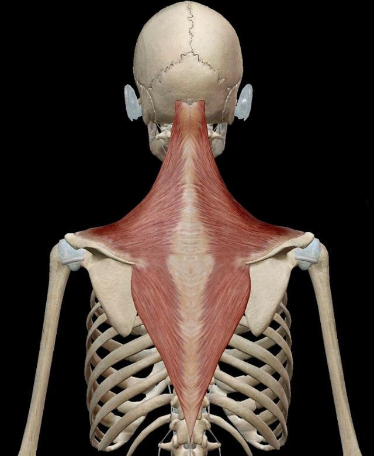

대중에게 친숙하면서도 인식이 나쁜 근육이 있다면 단연 승모근을 꼽을 수 있다.
그들에게 승모근이란 뒷목과 승모근 통증을 유발하고 어깨 라인을 망치는 악의 화신이다.
그래서 우리는 헬스장에서 승모근 운동을 하고 있는 사람을 보기 어렵기도다.
하지만 헬스 트레이너들의 말에 따르면 승모근을 운동하는 것 또한 필수적으로 필요하다고 한다.
우선 승모근의 모습을 살펴보도록 하자

승모근은 다음과 같은 모습을 하고 있는 근육으로 흔히들 생각하는 목옆의 근육만을 승모근이라 하는것이 아니다.
승모근은 세로로는 머리 뒤쪽의 후두골과 경추 1번부터 허리 위쪽의 흉추 12번까지, 가로로는 양 어깨를 가로지르는 크고 넓은 근육이다.
따라서 승모근 또한 조화롭게 운동을 병행하여 함께 성장하는 것이 바람직 하다.
▶견갑골 움직임 : 상부섬유는 견갑골을 상승(elevate)하고 중간섬유는 견갑골을 퇴축(retract)하며 하부섬유는 견갑골을 하강(depress)시킨다.
▶척추운동 : 견갑골 양측이 안정되면, 양측의 동시수축(co-contraction)은 목을 신전(extend)시킬 수 있다.
이러한 승모근을 운동하기 위해서는 어떤 운동이 있을까? 그에 대한 답변을 위해 유튜브 말왕TV 의 영상에서 정보를 가져왔다.
승모근의 기능, 생김새, 그리고 위치에 대해서 간단하게 살펴보고 그에 대한 운동법에 대해 알아 보았으니 앞으로 스스로 열심히 운동하기를 바란다.